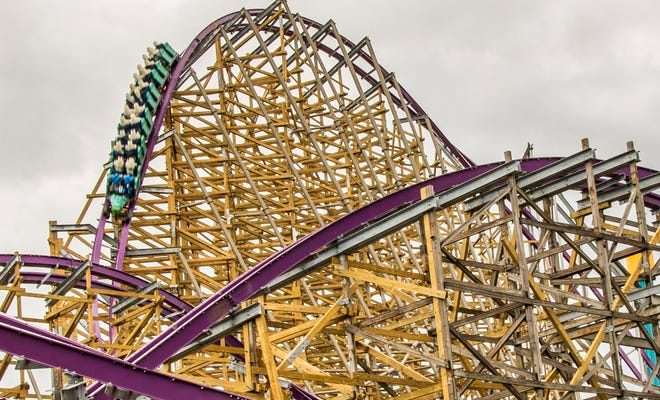

Iron Gwazi
Ce coaster est le plus haut hybride du monde (63m) avec une vitesse de 122km/h, il ouvrira en 2022 en floride ! Va t-il détroner Steel vengeance ?
Steel Vengeance
Le meilleur coaster du monde depuis son ouverture en 2018 à Cedar Point au USA. Il comporte 5 inversions et 23 airtimes ( le record du monde d'airtime).

Twisted collossus
C'est un retrack du mythique colossus à six flags magic Mountain. Un dueling coaster où les 2 trains s'entrecroises, on croirait qu'il pourraient se toucher !